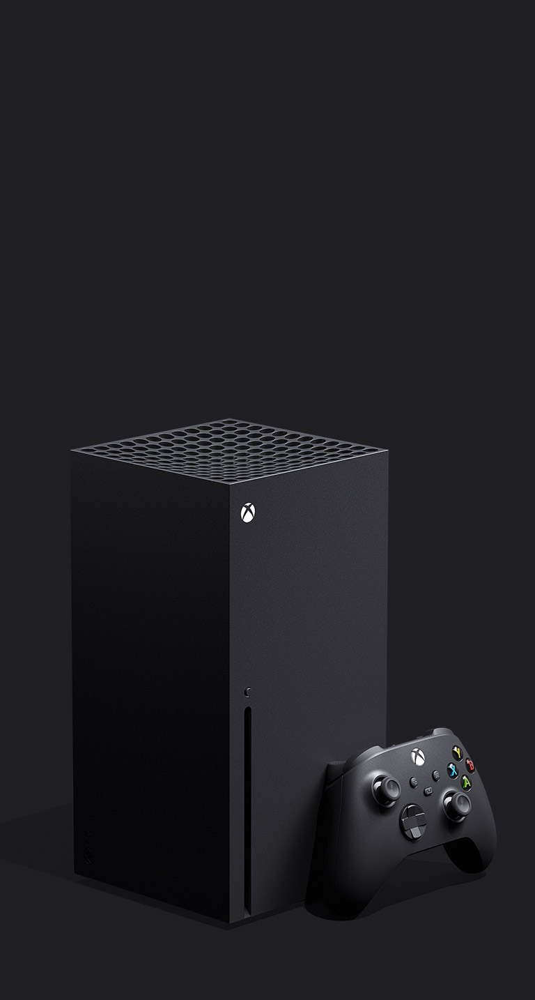

Xbox Series X es la pieza central de una estrategia quirúrgicamente diseñada para ponérselo a Sony más difícil que nunca en una competencia directa de la que Nintendo se desvinculó con el lanzamiento en 2006 de Wii. Durante los próximos meses veremos qué respaldo damos los jugadores tanto a PlayStation 5 como a la consola más ambiciosa de Microsoft, pero objetivamente esta última máquina llega a la línea de salida con varias batallas ganadas de antemano. La guerra aún debe ser librada, pero Xbox Series X intimida. Veamos si realmente es tan fiera como promete.
A continuacion vamos a ver sus especificaciones tecnicas:El auténtico corazón de esta consola de videojuegos es el chip que aglutina tanto la CPU como la lógica gráfica, dos componentes que trabajan coordinadamente en el interior de un mismo circuito integrado. Aunque este SoC fabricado con fotolitografía ultravioleta extrema (EUV) de 7 nm implementa las microarquitecturas Zen 2 para la CPU y RDNA 2 para el procesador gráfico, no es idéntico a las soluciones de AMD que se apoyan en ellas. Microsoft ha confirmado que el cerebro de sus nuevas consolas incorpora a petición de sus ingenieros algunas modificaciones que en cierta medida lo desmarcan de los procesadores Ryzen 3000 y las nuevas Radeon RX 6000.Xbox Series X incorpora 16 GB de tipo GDDR6, una memoria principal que se comunica con el SoC a través de un bus de 320 bits. Un apunte interesante es que no todo este mapa de memoria trabaja exactamente en las mismas condiciones. 10 de esos 16 GB operan con un ancho de banda de 560 GB/s, mientras que los 6 GB restantes se comunican con los demás componentes del sistema con una velocidad de transferencia de 336 GB/s. La APU y la memoria principal de esta consola han sido dimensionadas con un objetivo muy claro: enfrentarse con garantías al renderizado de los juegos a 2160p, pero manteniendo el coste bajo control para que el precio de la consola no se dispare.Otro componente fundamental de la arquitectura de esta consola de videojuegos es la unidad de estado sólido que se responsabiliza del almacenamiento secundario. Y es que tanto las nuevas máquinas de Microsoft como PlayStation 5 reemplazan los claramente superados discos duros mecánicos en los que han confiado sus predecesoras por unas unidades SSD capaces de alcanzar unas velocidades de lectura y escritura muy superiores y mucho más acordes con las necesidades de una máquina para juegos actual. La unidad de estado sólido de Xbox Series X tiene una capacidad de 1 TB, pero, como podéis ver en la siguiente captura, el espacio útil que nos queda a los usuarios para instalar juegos y otras aplicaciones se reduce a 802 GB.Por último, en lo que se refiere a la conectividad Xbox Series X incorpora la salida HDMI 2.1 necesaria para transportar hasta nuestro televisor fotogramas con resolución 4K UHD y una cadencia de imágenes de hasta 120 FPS, 3 puertos USB 3.1 de primera generación, un conector Gigabit Ethernet y una ranura para las tarjetas propietarias fabricadas por Seagate a las que tendremos que recurrir si queremos ampliar la capacidad de almacenamiento de la consola. Un apunte más: el cable HDMI que Microsoft nos entrega con esta consola satisface la norma 2.1. La tabla que tenéis justo debajo de estas líneas recoge las especificaciones de Xbox Series X, pero también hemos decidido incluir en ella las características de Xbox Series S, Xbox One X, PlayStation 5 y PlayStation 4 Pro para poner en contexto con más facilidad qué nos propone esta consola, en qué medida aventaja a las máquinas de la anterior generación, y también cómo queda si la comparamos con las otras consolas con las que convivirá durante la generación que está a punto de arrancar.
Antes de pasar con los diversos juegos que puedes jugar con esta consola, vamos a hacer un apartado especifico a el mejor juego de esta empresa: HALO